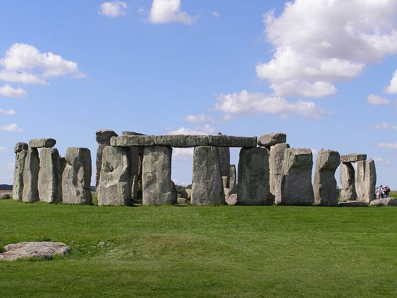

Stonehenge
Salisbury Plain, Wiltshire, England

A ring of sarsen stones of about 25 tons each, topped by lintels held with mortise and tenon joints, built in phases from about 3100 BC to 1600 BC and aligned to the summer solstice sunrise and winter solstice sunset. Erich von Däniken and other ancient astronaut writers list it among monuments they say were built by or with help from extraterrestrials. Mainstream archaeology categorically rejects this, and experiments have moved megaliths of up to 40 tons with ancient methods. 1,2
Open in the interactive Watcher
Sources
- Stonehenge Wikipedia
- Ancient astronauts Wikipedia